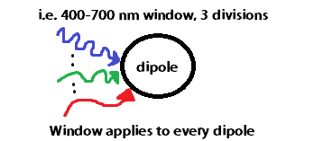

Acceptable Wavelength Ranges (in nm) Vary Depending on Dielectric Usage as Follows:
Copper (Cu): 187.85 to 1937.25
Gold (Au): 397.00 to 1650.00
Palladium (Ag): 187.85 to 1937.25
Platinum (Pt): 309.96 to 1239.84
Silver (Ag): 187.85 to 1937.25
Silicon Dioxide (SiO2): 250.00 to 2500.00
Note: DDSCAT will still run outside of the appropriate ranges,
but it will give incorrect and potentially misleading results!
If you are providing your own Dielectric file(s),
then you are responsible for accurately using your defined range.